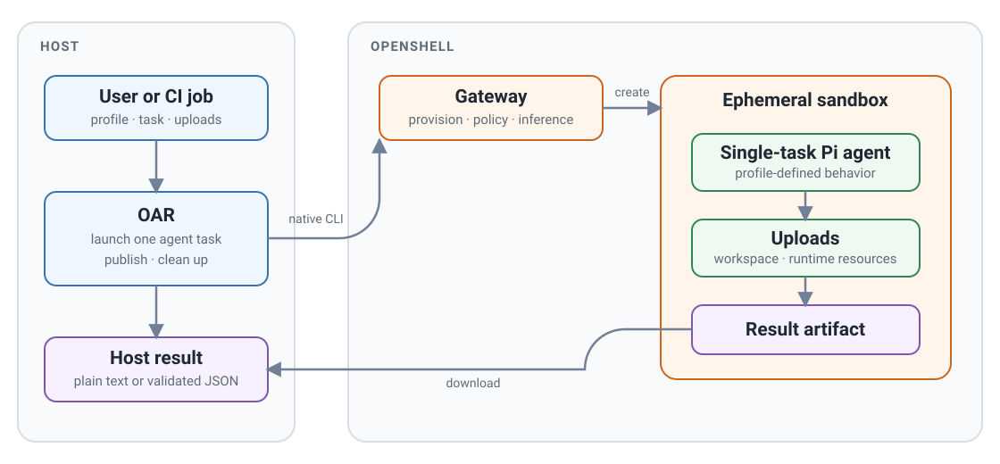
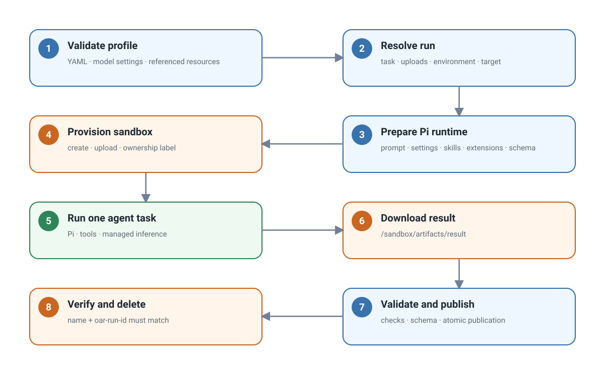
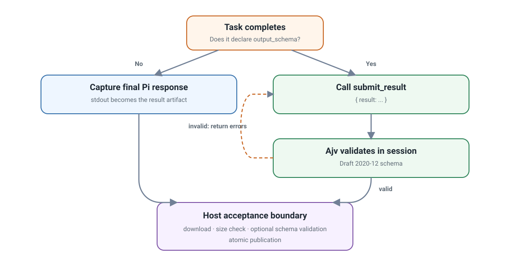

Launch ephemeral agents with OpenShell Agent Runner (OAR)
OpenShell Agent Runner (OAR) is a CLI for launching an ephemeral agent to
accomplish one configurable task. Each oar run creates an isolated OpenShell
sandbox, starts Pi with the selected profile, publishes one result, and removes
the sandbox. The agent exists only for that run, making OAR well suited to CI
jobs and other automated workflows.
Requirements
uv.- OpenShell 0.0.111 or newer.
- A running OpenShell gateway that the host can reach.
- An inference route and its model ID.
OAR uses this existing OpenShell configuration. It does not create gateways,
providers, workspaces, inference routes, or credentials. It uses the gateway's
default workspace unless you select another one. An OpenShell workspace is a
gateway-side namespace for sandboxes, inference routes, and access controls; it
is not the /workspace directory inside a sandbox.
Run the starter task
Choose the model ID configured on your inference route. Create every profile packaged with OAR, then check the gateway:
export MODEL_ID="provider/model"
uvx --from openshell-agent-runner oar init ./profiles \
--model "$MODEL_ID"
uvx --from openshell-agent-runner oar doctor --gateway openshell
Validate the included profile, then preview the run without creating a sandbox:
printf '# Review me\n\nA short document.\n' > document.md
uvx --from openshell-agent-runner oar validate ./profiles/reviewer
uvx --from openshell-agent-runner oar run ./profiles/reviewer \
--task review \
--gateway openshell \
--input document.md \
--output /tmp/oar-review.md \
--dry-run
Remove --dry-run to launch the agent. A successful run writes the review to
/tmp/oar-review.md. Replace provider/model with the route's model ID and
openshell with your gateway name.
init copies packaged profiles into an ordinary local directory so they can be
inspected, edited, and committed. Omit --profile to create all packaged
profiles. Use repeatable --profile NAME options to select a subset. The
required --model value is written into Pi's model registry and runtime
selection; OAR does not read MODEL_ID implicitly. Use --thinking LEVEL to
override the default high thinking level, or --thinking off when the model
does not support reasoning.
Why OAR fits CI
This bounded lifecycle is designed for CI and other automated workflows: a job can provide explicit inputs, run one review or transformation, consume the result, and finish without maintaining a long-lived agent service. The profile defines the task behavior through its prompt, tools, skills, extensions, uploads, model settings, and sandbox policy.
Profiles can be versioned with the repository, while stable exit codes and an explicit output path make the result available to later job steps. The CI worker must have access to an existing OpenShell gateway and inference route; OAR does not provision providers or credentials.

Profile inputs
A profile directory is the complete task configuration:
profile/
├── profile.yaml Task, sandbox policy, tools, skills, and extensions
├── models.json Pi provider and model definition
├── settings.json Pi model selection and thinking level
├── policy.yaml OpenShell sandbox policy
├── prompts/ Task instructions
├── schemas/ Optional result schemas
├── skills/ Optional Pi skills
└── extensions/ Optional Pi extensions
The CLI supplies run-specific values:
--taskselects a task fromprofile.yaml.--upload SOURCE:DESTINATIONuploads a file or directory using OpenShell's native mapping format. It may be repeated.--input FILEis an optional document-task convenience. OAR uploads the file to/workspace/input/document.mdand setsREPOSITORY_ROOT=/workspace/input.--env KEY=VALUEadds a sandbox environment value.--gatewayselects an existing OpenShell gateway.--workspaceselects a gateway-side OpenShell namespace. It defaults todefaultand is unrelated to the sandbox's/workspacedirectory.--outputselects the host result path.--timeout-secondslimits the agent run.
Environment keys start with a letter or underscore and contain only letters,
digits, and underscores. They cannot start with OpenShell's reserved
OPENSHELL_ prefix.
Tools and extensions
Each task lists the tools Pi may use. OAR accepts Pi's built-in bash, edit,
find, grep, ls, read, and write tools. Declare a custom tool alongside
the extension that provides it:
tasks:
check:
prompt: prompts/check.md
tools: [read, custom_check]
extensions:
- path: extensions/custom-check.ts
tools: [custom_check]
Validation rejects unknown tools, missing extension files, and custom tools without a matching extension declaration. Before inference starts, OAR checks the tools Pi actually registered. A misspelled built-in or an extension that fails to register its declared tool stops the task instead of silently removing the tool.
Run lifecycle

The sequence is:
- Load
profile.yaml,models.json, andsettings.json; validate every referenced local resource. - Resolve the selected task, uploads, environment, gateway, workspace, and output path.
- Prepare a temporary Pi runtime bundle containing the prompt, model files, configured skills and extensions, and optional output schema.
- Create a persistent sandbox with the packaged image context, sandbox policy, and ownership label, then upload the task inputs and prepared runtime files.
- Run
/opt/oar/pi/exec.shwithopenshell sandbox exec. Inside the sandbox, the script installs the Pi settings, changes toREPOSITORY_ROOT, and passes the prompt topi --printthrough standard input:
- Pi reads uploaded files, uses its declared tools, and accesses inference through OpenShell's managed inference path.
- OAR downloads
/sandbox/artifacts/resultunder a one-MiB file limit, validates it, and atomically replaces the requested host output. - OAR verifies the sandbox name and
oar-run-idownership label before deleting it.--keep-sandboxskips this cleanup.
Uploads
OAR uses OpenShell's term upload for files transferred into the sandbox. General uploads accept files or directories:
OpenShell treats a directory destination like cp: it creates the source
directory beneath that destination. Uploads run in declaration order, so more
than one source can intentionally merge into the same destination.
Uploads come from three places:
| Source | Contents |
|---|---|
| Profile | sandbox.upload mappings shared by every run |
| CLI | Repeatable --upload mappings and the optional --input document |
| OAR | Prompt, Pi model settings, skills, extensions, and optional schema |
Caller uploads normally live under /workspace. OAR runtime uploads live under
/sandbox/oar-runtime, and results live under /sandbox/artifacts. Both
/sandbox paths are reserved for OAR. Uploaded workspace changes are disposable
and are not synchronized back to the host.
Result handling

Without output_schema, Pi's final headless response becomes the result. OAR
requires it to be present, non-empty, and no larger than one MiB.
With output_schema, OAR automatically loads its built-in Pi extension and
adds the generic submit_result tool to the agent session. Profiles do not need
to provide this extension themselves. The tool uses TypeBox for its Pi tool
parameters and Ajv for Draft 2020-12 validation. Invalid submissions return
diagnostics to Pi, which can correct and resubmit inside the same agent session.
OAR validates the downloaded JSON against the same schema again before
publishing it.
Both validators treat extension keywords and JSON Schema format values as
annotations. OAR rejects pattern and patternProperties because Python and
JavaScript use different regular-expression dialects. Use portable structural
keywords such as type, enum, const, length, and numeric bounds instead.
OAR also rejects $ref, $dynamicRef, and $recursiveRef because the built-in
submission tool nests the schema under its result parameter. Inline the
referenced schema definitions.
The schema belongs to the profile. OAR has no built-in review or other task-specific result type.
Native command sequence
A normal run uses OpenShell's native sandbox operations in this order:
openshell sandbox create ...
openshell sandbox upload ...
openshell sandbox exec ...
openshell sandbox download ...
openshell sandbox get ...
openshell sandbox delete ...
The upload command is repeated for each task input and runtime file.
Use --dry-run to print the complete generated commands and host actions
without creating a sandbox.
Security boundaries
Use --env only for non-secret values. Credentials belong in OpenShell's
provider and inference configuration, not in profiles or command arguments.
Review uploads before sending private files to a remote gateway; uploaded files
and sandbox changes are disposable and are not synchronized back to the host.
OAR downloads only the task result. Its transport and optional schema checks
validate the result's shape, not the truth of agent-produced claims.
Failure boundaries
| Exit code | Meaning |
|---|---|
0 |
The result was validated and published. |
1 |
OpenShell execution, timeout, missing remote output, download size limit, ownership inspection, or cleanup failed. |
2 |
CLI input or profile configuration was invalid. |
3 |
A downloaded result was empty, invalid, or failed its schema. |
Develop OAR
From projects/openshell-agent-runner, run the full local checks and build both
package distributions:
Use make test PYTEST_ARGS="tests/test_config.py" for a focused test and
make clean to remove generated build and cache files. The local PyPI workflow
is documented in
RELEASING.md.